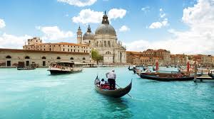
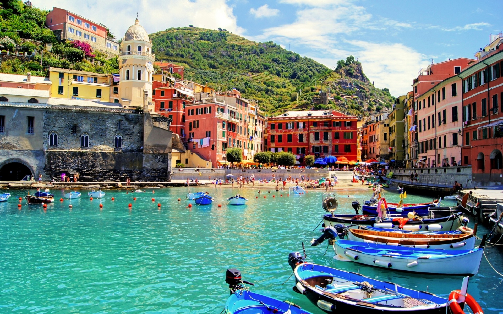
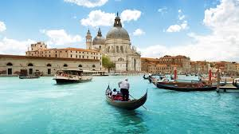
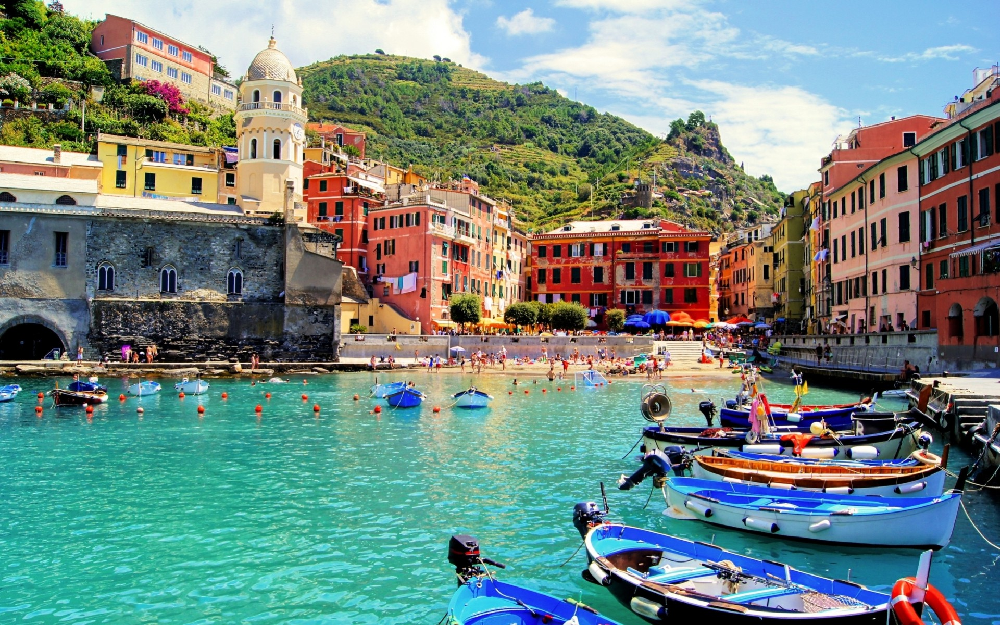

Hispaania 🇪🇸
- Asukoht: Lõuna-Euroopa, Apenniini poolsaar.
- Pealinn: Rooma.
- Keeled: Itaalia (ametlik), piirkondlikud keeled nagu sardiinia, friuli, ja teised.
- Valuuta: Euro (€).
- Rahvaarv: Ligikaudu 60 miljonit.
Hispaania on riik, mis pakub igale reisijale unustamatuid elamusi! Avastage Barcelona maagilised tänavad, nautige Madriidi ajaloolist võlu ning lõõgastuge Valencia päikeselistel randadel. Iga nurk Hispaanias on täis elu ja kirge, pakkudes külastajatele võimalust sukelduda kultuuri ja traditsioonidesse.
Maailmakuulus Hispaania köök pakub rohkelt maitseelamusi – proovige paellat, tapaseid ja värsket mereandide valikut. Mitmekesine veinivalik ja kohalikud toidud garanteerivad kulinaarsed kogemused, mis jäävad meelde veel kaua pärast reisi.
Hispaania looduslik ilu ulatub majesteetlikest Püreneede mägedest Andaluusia lopsakate viinamarjaistandusteni ja Baleaari saarte türkiissiniste veteni. Olenemata sellest, kas otsite seiklusi, kultuuri või puhkust, Hispaania võlub teid oma mitmekesisuse ja unikaalse atmosfääriga. Avastage Hispaania – reis, mis jääb igaveseks teie südamesse!
Itaalia 🇮🇹
- Asukoht: Edela-Euroopa, Pürenee poolsaar.
- Pealinn: Madrid.
- Keeled: Hispaania (ametlik), Kataloonia, Baskimaa ja Galicia keel.
- Valuuta: Euro (€).
- Rahvaarv: Ligikaudu 47 miljonit.
Italial on midagi pakkuda igale reisijale! Avastage ajaloolised varemed Roomas, rändake Veneetsia kanalitel, ning nautige Toscana maapiirkonda. Iga nurk Itaalias pakub unustamatuid elamusi ning võimalust ajaloosse sukelduda.
Nautige maailmakuulsat Itaalia kööki, maitses värskeid pastaroogasid, pitsasid ning käsitsi valmistatud gelatot. Erakordne veinivalik ja traditsiooniline köök garanteerivad unustamatud kulinaarsed elamused, mis püsivad mälus kaua pärast reisi.
Itaalia looduslik ilu ulatub hingematvatest Alpide mägedest Amalfi ranniku siniste veteni. Ükskõik, kas otsite seiklusi, kultuuri või rahu, Itaalia võlub teid oma mitmekesisuse ja võluva atmosfääriga. Tutvuge Itaaliaga – reis, mida te kunagi ei unusta!
 



Portugal 🇵🇹
- Asukoht: Lääne-Euroopa, Pürenee poolsaare edelarannik.
- Pealinn: Lissabon.
- Keeled: Portugali (ametlik).
- Valuuta: Euro (€).
- Rahvaarv: Ligikaudu 10 miljonit.
Portugal on riik, kus iga päev toob uusi ja unustamatuid seiklusi. Kujutage ette, et rändate läbi ajalooliste linnade, nagu Lissabon ja Porto, kus vanad tänavad räägivad lugusid minevikust ja kaasaegsest elust. Avastage Portugali arhitektuuri meistriteoseid, nagu Belémi torn ja Jerónimose klooster, mis peegeldavad riigi hiilgavat ajalugu ja kunstilist pärandit.
Portugali kultuur on täis soojust ja külalislahkust, mida tunnete igal sammul. Traditsioonilised festivalid ja pidustused, nagu São João Porto linnas ja Festa dos Tabuleiros Tomaris, toovad esile riigi rikkaliku kultuuripärandi ja pakuvad võimalust sukelduda kohalike elanike igapäevaellu. Maitske autentseid Portugali roogasid, nagu bacalhau ja pastel de nata, mis rõõmustavad teie maitsemeeli.ks.
Kui te armastate loodust, pakub Portugal lummavaid maastikke alates Atlandi ookeani ääres asuvatest kuldsetest randadest kuni Sintra mägedeni. Siin saate nautida päikeseloojangut Algarve rannikul või matkata Douro oru viinamarjaistanduste vahel, kust avanevad hingematvad vaated.